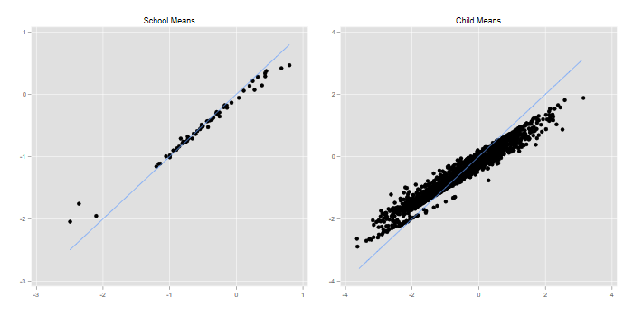
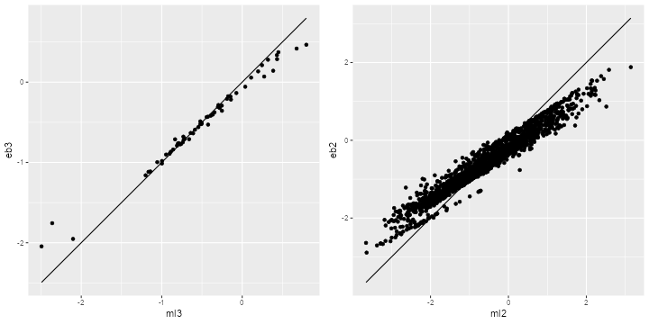
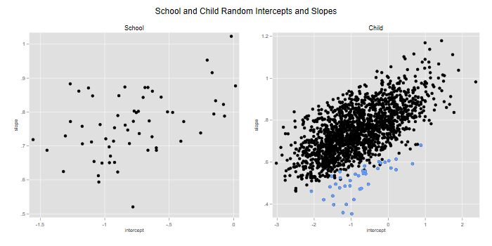
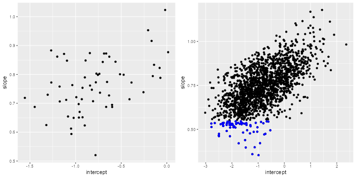
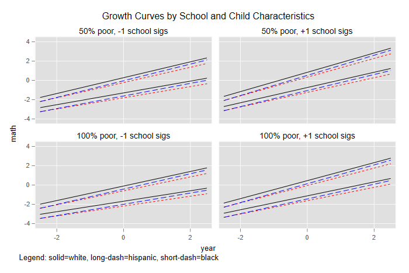
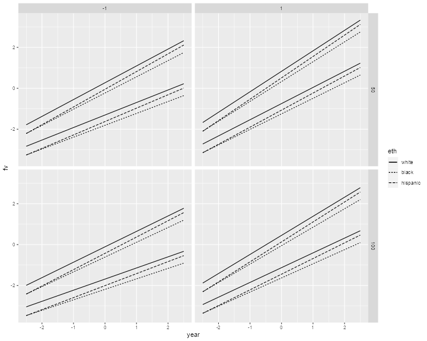

<h2 id="level-models">3-Level Models</h2>
<p>We now consider 3-level models. We will use time-series data on 1721
students nested within 60 urban public primary schools. The outcome of
interest is mathematics achievement. The data were collected at the end
of first grade and annually thereafter up to sixth grade, but not all
students have six observations.</p>
<p>This dataset is used in Chapter 4 of the manual for HLM 6. It came in
three files, one for each level, but I have merged them into a single
file available in the course website.</p>
<p>A correspondent asked about the equations for the models fitted here.
I have included links to the equations for the growth curve model, and
for the growth curve model with predictors, skipping the simpler
variance-components model.</p>

{% include srtabs.html %}

<h3 id="variance-components">Variance Components</h3>
<p>We read the data and fit a simple variance-components model. Note
that we have two specifications for the random part, one at the school
level (level 3), and one at the child-level (level 2). They are both
null (intercept-only) models, so we are simply adding an error term at
each level. <span class="stata">We specify these going <em>down</em> the
hierarchy.</span> We also specify maximum likelihood estimation. <span
class="r">(The R default is REML).</span></p>
<pre class='stata'>. use https://grodri.github.io/datasets/egm, clear
(Data from HLM 6 manual on math achievement in 60 urban schools)

. mixed math || schoolid: || childid:  , mle

Performing EM optimization ...

Performing gradient-based optimization: 
Iteration 0:   log likelihood = -12652.991  
Iteration 1:   log likelihood =  -12652.99  

Computing standard errors ...

Mixed-effects ML regression                     Number of obs     =      7,230

        Grouping information
        ────────────────┬────────────────────────────────────────────
                        │     No. of       Observations per group
         Group variable │     groups    Minimum    Average    Maximum
        ────────────────┼────────────────────────────────────────────
               schoolid │         60         18      120.5        387
                childid │      1,721          2        4.2          6
        ────────────────┴────────────────────────────────────────────

                                                Wald chi2(0)      =          .
Log likelihood =  -12652.99                     Prob > chi2       =          .

─────────────┬────────────────────────────────────────────────────────────────
        math │ Coefficient  Std. err.      z    P>|z|     [95% conf. interval]
─────────────┼────────────────────────────────────────────────────────────────
       _cons │   -.510021   .0779639    -6.54   0.000    -.6628275   -.3572144
─────────────┴────────────────────────────────────────────────────────────────

─────────────────────────────┬────────────────────────────────────────────────
  Random-effects parameters  │   Estimate   Std. err.     [95% conf. interval]
─────────────────────────────┼────────────────────────────────────────────────
schoolid: Identity           │
                  var(_cons) │    .317646   .0687236       .207866    .4854037
─────────────────────────────┼────────────────────────────────────────────────
childid: Identity            │
                  var(_cons) │   .5704854   .0337543      .5080202    .6406312
─────────────────────────────┼────────────────────────────────────────────────
               var(Residual) │   1.523894   .0290756      1.467959     1.58196
─────────────────────────────┴────────────────────────────────────────────────
LR test vs. linear model: chi2(2) = 1404.55               Prob > chi2 = 0.0000

Note: LR test is conservative and provided only for reference.
</pre>
<pre class='r'>> library(haven)
> library(lme4)
> egm &lt;- read_dta("https://grodri.github.io/datasets/egm.dta")    
> vc &lt;- lmer(math ~ 1 + (1|childid) + (1 | schoolid), data=egm, REML=FALSE)
> summary(vc, corr = FALSE)
Linear mixed model fit by maximum likelihood  ['lmerMod']
Formula: math ~ 1 + (1 | childid) + (1 | schoolid)
   Data: egm

     AIC      BIC   logLik deviance df.resid 
 25314.0  25341.5 -12653.0  25306.0     7226 

Scaled residuals: 
    Min      1Q  Median      3Q     Max 
-2.6726 -0.6576  0.0265  0.6735  3.3344 

Random effects:
 Groups   Name        Variance Std.Dev.
 childid  (Intercept) 0.5705   0.7553  
 schoolid (Intercept) 0.3176   0.5636  
 Residual             1.5239   1.2345  
Number of obs: 7230, groups:  childid, 1721; schoolid, 60

Fixed effects:
            Estimate Std. Error t value
(Intercept) -0.51002    0.07796  -6.542
</pre>
<p>We have 60 schools with an average of 120.5 students for a total of
1721 children, who have between 2 and 6 observations each for a total of
7230 observations.</p>
<p>Our estimate of the mean score is -0.51 and the standard deviations
are 0.56, 0.76 and 1.23 at the school, child and observation levels. We
can turns these into intraclass correlations from first principles.</p>
<pre class='stata'>. mat list e(b) // to get names

e(b)[1,4]
          math:   lns1_1_1:   lns2_1_1:    lnsig_e:
         _cons       _cons       _cons       _cons
y1  -.51002095  -.57340893  -.28063386   .21063435

. scalar v3 = exp(2 * _b[lns1_1_1:_cons])

. scalar v2 = exp(2 * _b[lns2_1_1:_cons])

. scalar v1 = exp(2 * _b[lnsig_e:_cons])

. display v3/(v3 + v2 + v1), (v2 + v3)/(v3 + v2 + v1)
.13169264 .36820984
</pre>
<pre class='r'>> v &lt;- c(sigma(vc)^2, unlist(VarCorr(vc)))
> v[3]/(v[1] + v[2] + v[3])       
 schoolid 
0.1316919 
> (v[2] + v[3])/(v[1] + v[2] + v[3])
  childid 
0.3682094 
</pre>
<p>We find intra-class correlations of 0.13 at the school level and 0.37
at the child level. These numbers represent the correlation in math
achievement between two children in the same school, and between two
measurements on the same child (in the same school). We can also
conclude that 13% of the variation in math achievement can be attributed
to the schools and 37% to the children (which includes the school).</p>
<p>We can also obtain posterior Bayes estimates of the school and child
random effects <span class="stata">(these come up in the same order as
the equations)</span> and compare with school and child means</p>
<pre class='stata'>. predict r3 r2, reffects

. // 3
. egen m3 = mean(math), by(schoolid)

. gen eb3 = _b[_cons] + r3

. egen lev3 = tag(schoolid)

. twoway (scatter eb3 m3 if lev3) (function y=x, range(-2.5 .8)), ///
>   legend(off) title(School Means) name(school, replace)

. // 2
. egen m2 = mean(math), by (childid)

. egen n2 = count(math), by(childid) //?

. gen eb2 = eb3 + r2

. egen lev2 = tag(childid)

. twoway (scatter eb2 m2 if lev2 &amp; n2 > 2) (function y=x, range(-3.6 3.1)), ///
>   legend(off) title(Child Means) name(child, replace)

. // graph
. graph combine school child, xsize(6) ysize(3)

. graph export egmfig1.png, width(700) replace
file egmfig1.png saved as PNG format
</pre>
<p></p>
<pre class='r'>> library(dplyr)
> library(ggplot2)
> library(gridExtra)
> re &lt;- ranef(vc)
> # schools
> schools  &lt;- group_by(egm, schoolid) |> 
+   summarize(ml3 = mean(math)) |>
+   mutate(eb3 = fixef(vc) + re$schoolid[schoolid, ] )
> r &lt;- data.frame(x=range(schools$ml3))
> g3 &lt;- ggplot(schools, aes(ml3, eb3)) + geom_point() + 
+   geom_line(data=r, aes(x,x))
> # students
> students &lt;- group_by(egm, childid) |>
+   summarize(ml2 = mean(math), schoolid = first(schoolid) ) |>
+   mutate(eb2 = fixef(vc) + re$schoolid[schoolid,1] + re$childid[childid,1])
> r &lt;- data.frame(x=range(students$ml2))
> g2 &lt;- ggplot(students, aes(ml2, eb2)) + geom_point() + 
+   geom_line(data=r, aes(x,x))
> g &lt;- arrangeGrob(g3, g2, ncol=2)
> ggsave("egmfig1r.png", plot = g, width=10, height=5, dpi=72)
</pre>
<p></p>
<p>We see the usual shrinkage, particularly for the child means.</p>
<h3 id="growth-curves">Growth Curves</h3>
<p>The obvious predictor at the observation level is study
<code>year</code>, which is coded -2.5, -1.5, -0.5, 0.5, 1.5 and 2.5 for
the six years of data collection. There’s also a variable called
<code>grade</code> reflecting the grade minus one, which is almost the
same thing:</p>
<pre class='stata'>. tab year grade

           │                         grade
      year │         0          1          2          3          4 │     Total
───────────┼───────────────────────────────────────────────────────┼──────────
      -2.5 │       131          0          0          0          0 │       131 
      -1.5 │     1,346          0          0          0          0 │     1,346 
       -.5 │       104      1,412          4          0          0 │     1,520 
        .5 │         1        194      1,470          7          0 │     1,672 
       1.5 │         0          5        174      1,200          8 │     1,387 
       2.5 │         0          1          5        149      1,010 │     1,174 
───────────┼───────────────────────────────────────────────────────┼──────────
     Total │     1,582      1,612      1,653      1,356      1,018 │     7,230 


           │   grade
      year │         5 │     Total
───────────┼───────────┼──────────
      -2.5 │         0 │       131 
      -1.5 │         0 │     1,346 
       -.5 │         0 │     1,520 
        .5 │         0 │     1,672 
       1.5 │         0 │     1,387 
       2.5 │         9 │     1,174 
───────────┼───────────┼──────────
     Total │         9 │     7,230 
</pre>
<pre class='r'>> table(egm$year, egm$grade)
      
          0    1    2    3    4    5
  -2.5  131    0    0    0    0    0
  -1.5 1346    0    0    0    0    0
  -0.5  104 1412    4    0    0    0
  0.5     1  194 1470    7    0    0
  1.5     0    5  174 1200    8    0
  2.5     0    1    5  149 1010    9
</pre>
<p>We will follow the HLM manual in using years to track progress in
math achievement over time. Year zero is near the start of the third
grade, and I will refer to it as ‘third grade’ for simplicity.</p>
<p>Our first model will allow for random intercepts and slopes, with no
predictors at levels 2 or 3. <span class="stata">I specify
<code>covariance(unstructured)</code> at each level, so the intercept
and slope can be correlated at level 2 as well as level 3.</span></p>
<p>The equations for this model <a href="egmequations#growth-curve">are
here</a>.</p>
<pre class='stata'>. mixed math year ///
>   || schoolid: year, covariance(unstructured) ///
>   || childid:  year, covariance(unstructured) mle

Performing EM optimization ...

Performing gradient-based optimization: 
Iteration 0:   log likelihood = -8169.1304  
Iteration 1:   log likelihood = -8163.1176  
Iteration 2:   log likelihood = -8163.1156  
Iteration 3:   log likelihood = -8163.1156  

Computing standard errors ...

Mixed-effects ML regression                     Number of obs     =      7,230

        Grouping information
        ────────────────┬────────────────────────────────────────────
                        │     No. of       Observations per group
         Group variable │     groups    Minimum    Average    Maximum
        ────────────────┼────────────────────────────────────────────
               schoolid │         60         18      120.5        387
                childid │      1,721          2        4.2          6
        ────────────────┴────────────────────────────────────────────

                                                Wald chi2(1)      =    2499.87
Log likelihood = -8163.1156                     Prob > chi2       =     0.0000

─────────────┬────────────────────────────────────────────────────────────────
        math │ Coefficient  Std. err.      z    P>|z|     [95% conf. interval]
─────────────┼────────────────────────────────────────────────────────────────
        year │   .7630273   .0152609    50.00   0.000     .7331164    .7929382
       _cons │  -.7793053   .0578295   -13.48   0.000    -.8926489   -.6659616
─────────────┴────────────────────────────────────────────────────────────────

─────────────────────────────┬────────────────────────────────────────────────
  Random-effects parameters  │   Estimate   Std. err.     [95% conf. interval]
─────────────────────────────┼────────────────────────────────────────────────
schoolid: Unstructured       │
                   var(year) │   .0110171   .0025621      .0069842    .0173788
                  var(_cons) │   .1653165   .0359122      .1079959    .2530611
             cov(year,_cons) │   .0170462   .0071472       .003038    .0310545
─────────────────────────────┼────────────────────────────────────────────────
childid: Unstructured        │
                   var(year) │   .0112561    .001961      .0080001    .0158373
                  var(_cons) │   .6404597    .025183      .5929559    .6917691
             cov(year,_cons) │   .0467854    .005063      .0368621    .0567086
─────────────────────────────┼────────────────────────────────────────────────
               var(Residual) │   .3014383   .0066403      .2887005    .3147382
─────────────────────────────┴────────────────────────────────────────────────
LR test vs. linear model: chi2(6) = 5595.58               Prob > chi2 = 0.0000

Note: LR test is conservative and provided only for reference.

. estat recov, corr

Random-effects correlation matrix for level schoolid

             │      year      _cons 
─────────────+──────────────────────
        year │         1            
       _cons │  .3994262          1 

Random-effects correlation matrix for level childid

             │      year      _cons 
─────────────+──────────────────────
        year │         1            
       _cons │  .5510233          1 
</pre>
<pre class='r'>> gc &lt;- lmer(math ~ year + (1 + year|childid) + (1 + year|schoolid),
+   data = egm, REML=FALSE)
> summary(gc)   
Linear mixed model fit by maximum likelihood  ['lmerMod']
Formula: math ~ year + (1 + year | childid) + (1 + year | schoolid)
   Data: egm

     AIC      BIC   logLik deviance df.resid 
 16344.2  16406.2  -8163.1  16326.2     7221 

Scaled residuals: 
    Min      1Q  Median      3Q     Max 
-3.2047 -0.5640 -0.0372  0.5309  5.2629 

Random effects:
 Groups   Name        Variance Std.Dev. Corr
 childid  (Intercept) 0.64046  0.8003       
          year        0.01126  0.1061   0.55
 schoolid (Intercept) 0.16532  0.4066       
          year        0.01102  0.1050   0.40
 Residual             0.30144  0.5490       
Number of obs: 7230, groups:  childid, 1721; schoolid, 60

Fixed effects:
            Estimate Std. Error t value
(Intercept) -0.77930    0.05783  -13.48
year         0.76303    0.01526   50.00

Correlation of Fixed Effects:
     (Intr)
year 0.357 
</pre>
<p>The first thing you will notice is that as models become more complex
they take a bit longer to run. The results can be compared with the
output from HLM 6 starting on page 80 of the manual, and are in very
close agreement.</p>
<p>The fixed-effect estimates yield an intercept of -0.78 and a slope of
0.76. These values can be interpreted as the average achievement in
third grade, and the average rate of change per year. Clearly average
math achievement increases significantly over time.</p>
<p>The output also shows the variances and covariances of the random
effects. <span class="stata">The correlations can be obtained with
<code>estat recovariance</code>, which has an option
<code>corr</code>.</span></p>
<p>We see that the intercepts and slopes have correlations of 0.40 at
the school level and 0.55 at the child level. (In a hierarchical model
the correlation at level 2 is never lower than at level 3.) The child
estimate (0.55) can be interpreted as the correlation between a child’s
achievement around third grade and her rate of growth. The school
estimate (0.40) represents the correlation between a school’s
achievement around third grade and the rate of change per year.</p>
<p>Most of the variance in the intercept comes from the child level,
whereas the variance in the slope is about the same at each level. These
results indicate fairly significant variation among schools in mean
achievement around third grade, as well as in the rates of change over
time.</p>
<p>We can now estimate growth curves for each school and for each child,
combining the estimated fixed and random effects. I’ll just predict the
random effects, and plot the slope versus the intercept at each level.
Note that at the child level I include both the school and child
residuals. <span class="stata">In Stata we use <code>predict</code> with
the <code>reffects</code> option. With four random effects we need four
variables to store the Bayes estimates. I’ll use numbers for the levels,
<code>a</code> for intercepts and <code>b</code> for slopes.</span></p>
<pre class='stata'>. predict r3b r3a r2b r2a, reffects

. local labels xtitle(intercept) ytitle(slope)

. gen a3 = _b[_cons] + r3a

. gen b3 = _b[year]  + r3b

. twoway scatter b3 a3 if lev3, `labels' title(School) ///
>   name(school, replace)

. gen a2 = a3 + r2a // or _b[_cons] + r3a + r2a

. gen b2 = b3 + r2b // or _b[year]  + r3b + r3b

. twoway (scatter b2 a2 if lev2, `labels') ///
>   (scatter b2 a2 if lev2 &amp; b3 &lt; .55), legend(off) ///
>   title(Child) name(child, replace) 

. graph combine school child, xsize(6) ysize(3) ///
>   title(School and Child Random Intercepts and Slopes)

. graph export egmfig2.png, width(700) replace
file egmfig2.png saved as PNG format
</pre>
<p></p>
<pre class='r'>> b = fixef(gc)
> gcre &lt;- ranef(gc)
> names(gcre$schoolid) &lt;- names(gcre$childid) &lt;- c("intercept","slope")
> school &lt;- mutate(gcre$schoolid, intercept = b[1] + intercept, slope = b[2] + slope)
> g3 &lt;- ggplot(school, aes(intercept,slope)) + geom_point()
> child &lt;- select(egm, schoolid, childid) |> 
+   group_by(childid) |> filter(row_number()==1) |> mutate(
+   intercept = b[1] + gcre$schoolid[schoolid,1] + gcre$childid[childid,1],
+   slope     = b[2] + gcre$schoolid[schoolid,2] + gcre$childid[childid,2])            
> g2 &lt;- ggplot(child, aes(intercept,slope)) + geom_point() +
+   geom_point(data=filter(child, slope &lt; .55), aes(intercept,slope), color="blue")
> g &lt;- arrangeGrob(g3, g2, ncol=2)
> ggsave("egmfig2r.png", plot = g, width=10, height=5, dpi=72)
</pre>
<p></p>
<p>We see substantial variation in school levels and rates of change in
math achievement. One school is notable for having a reasonable
third-grade mean, but a low rate of change per year (just above 0.5). I
highlight the children from this school in the graph on the right, which
shows their expected third-grade scores and rates of change combining
school and child effects.</p>
<p>Note the positive correlation between intercepts and slopes at both
levels, so children and schools with higher third-grade math achievement
also tend to show greater gains over time.</p>
<p>We can also plot fitted lines at the school and child level. It might
not be a bad idea to test for linearity of the growth curves.</p>
<h3 id="growth-curve-predictors">Growth Curve Predictors</h3>
<p>One way to look for school or individual characteristics that may be
associated with levels and trends in mathematics achievement is to plot
or regress the Bayes estimates of intercepts and slopes on potential
predictors at each level.</p>
<p>Here I’ll follow the HLM manual in considering a model where a
child’s growth curve depends on ethnicity, with different intercepts and
slopes for whites, blacks and hispanics, and where the school average
curve depends on the percent of students with low income.</p>
<p>One way to develop a model of this type is to write down the equation
for each level and then substitute down the hierarchy to obtain the
fixed and random components in the complete model. This process shows
the need to create cross-level interactions between <code>year</code>
and the predictors at the school and child level.</p>
<p>Before creating cross-products we consider centering. This is not
needed (not, in my view, advisable) for dummy variables, where zero is
meaningful because it identifies the reference category. One might
consider centering the percent poor, but for consistency with the HLM
manual I will not. Bear in mind that the main effects then refer to</p>
<p>The equations for this model <a href="egmequations">are here</a>.</p>
<pre class='stata'>. gen yearBlack = year * black

. gen yearHispanic = year * hispanic

. gen yearLowinc = year * lowinc 

. mixed math year black hispanic lowinc ///
>   yearBlack yearHispanic yearLowinc ///
>   || schoolid: year, covariance(unstructured) ///
>   || childid:  year, covariance(unstructured) mle

Performing EM optimization ...

Performing gradient-based optimization: 
Iteration 0:   log likelihood = -8125.8349  
Iteration 1:   log likelihood = -8119.6062  
Iteration 2:   log likelihood = -8119.6035  
Iteration 3:   log likelihood = -8119.6035  

Computing standard errors ...

Mixed-effects ML regression                     Number of obs     =      7,230

        Grouping information
        ────────────────┬────────────────────────────────────────────
                        │     No. of       Observations per group
         Group variable │     groups    Minimum    Average    Maximum
        ────────────────┼────────────────────────────────────────────
               schoolid │         60         18      120.5        387
                childid │      1,721          2        4.2          6
        ────────────────┴────────────────────────────────────────────

                                                Wald chi2(7)      =    3324.78
Log likelihood = -8119.6035                     Prob > chi2       =     0.0000

─────────────┬────────────────────────────────────────────────────────────────
        math │ Coefficient  Std. err.      z    P>|z|     [95% conf. interval]
─────────────┼────────────────────────────────────────────────────────────────
        year │   .8745122   .0391404    22.34   0.000     .7977984    .9512259
       black │  -.5021085   .0778753    -6.45   0.000    -.6547414   -.3494756
    hispanic │  -.3193816   .0860935    -3.71   0.000    -.4881218   -.1506414
      lowinc │  -.0075778   .0016908    -4.48   0.000    -.0108918   -.0042638
   yearBlack │  -.0309253   .0224586    -1.38   0.169    -.0749432    .0130927
yearHispanic │   .0430865    .024659     1.75   0.081    -.0052442    .0914172
  yearLowinc │  -.0013689   .0005226    -2.62   0.009    -.0023933   -.0003446
       _cons │   .1406379   .1274908     1.10   0.270    -.1092396    .3905153
─────────────┴────────────────────────────────────────────────────────────────

─────────────────────────────┬────────────────────────────────────────────────
  Random-effects parameters  │   Estimate   Std. err.     [95% conf. interval]
─────────────────────────────┼────────────────────────────────────────────────
schoolid: Unstructured       │
                   var(year) │   .0079801   .0020562       .004816    .0132231
                  var(_cons) │   .0780901    .019642      .0476973    .1278494
             cov(year,_cons) │   .0008172   .0044663     -.0079366     .009571
─────────────────────────────┼────────────────────────────────────────────────
childid: Unstructured        │
                   var(year) │   .0110938   .0019517      .0078583    .0156615
                  var(_cons) │   .6222512   .0245399      .5759658    .6722562
             cov(year,_cons) │   .0466258   .0049886      .0368483    .0564033
─────────────────────────────┼────────────────────────────────────────────────
               var(Residual) │   .3015912   .0066415      .2888511    .3148932
─────────────────────────────┴────────────────────────────────────────────────
LR test vs. linear model: chi2(6) = 4797.28               Prob > chi2 = 0.0000

Note: LR test is conservative and provided only for reference.
</pre>
<pre class='r'>> egm &lt;- mutate(egm, eth = factor(1 + black + 2 * hispanic,  
+   labels=c("white","black","hispanic")))
> gcp &lt;- lmer(math ~ year * (eth + lowinc) + 
+   (year | childid) + (year | schoolid),  data=egm, REML=FALSE)
> summary(gcp, corr=FALSE)
Linear mixed model fit by maximum likelihood  ['lmerMod']
Formula: math ~ year * (eth + lowinc) + (year | childid) + (year | schoolid)
   Data: egm

     AIC      BIC   logLik deviance df.resid 
 16269.2  16372.5  -8119.6  16239.2     7215 

Scaled residuals: 
    Min      1Q  Median      3Q     Max 
-3.2482 -0.5645 -0.0328  0.5348  5.2766 

Random effects:
 Groups   Name        Variance Std.Dev. Corr
 childid  (Intercept) 0.622249 0.78883      
          year        0.011091 0.10531  0.56
 schoolid (Intercept) 0.078134 0.27952      
          year        0.007979 0.08933  0.03
 Residual             0.301594 0.54918      
Number of obs: 7230, groups:  childid, 1721; schoolid, 60

Fixed effects:
                   Estimate Std. Error t value
(Intercept)       0.1406281  0.1275156   1.103
year              0.8745121  0.0391388  22.344
ethblack         -0.5021177  0.0778780  -6.447
ethhispanic      -0.3193836  0.0860948  -3.710
lowinc           -0.0075776  0.0016911  -4.481
year:ethblack    -0.0309297  0.0224580  -1.377
year:ethhispanic  0.0430851  0.0246583   1.747
year:lowinc      -0.0013689  0.0005226  -2.619
optimizer (nloptwrap) convergence code: 0 (OK)
Model failed to converge with max|grad| = 0.00341218 (tol = 0.002, component 1)
</pre>
<p>Results can be compared with the HLM output starting on page 88 of
the manual. In this model each child has her own growth curve, but the
intercept and slope depend on the school’s percent poor, school
unobserved characteristics, the child’s owh ethnicity, and unobserved
characteristics of the child.</p>
<p>One way to think about the estimates is as follows. We start with a
growth curve that has 0.141 points of math achievement by the middle of
third grade and increases by 0.875 points per year, provided the school
has no poor students. Each percentage point of low income students is
associated with a third grade mean that’s 0.008 lower and increases
0.001 points less per year, so a school with 100% poor students would
have a third-grade mean of -0.617 and an increase of 0.738 points per
year. The intercept and slope in any particular school will vary around
the average line for its percent poor.</p>
<p>Next come characteristics of the individual, in this case ethnicity.
Blacks have a third-grade mean 0.502 points below whites in the same
school, and the increase per year is 0.031 points less than for whites
in the same school. The results for hispanics indicate a third-grade
mean 0.319 points below whites, but a growth rate per year 0.043 points
higher than whites in the same school. Each child’s growth curve,
however, will vary around the average line for kids of the same
ethnicity in the same school.</p>
<p>The random effects indicate that the average third-grade score varies
by school, with a standard deviation of 0.28, while the rate of change
has a standard deviation of 0.089. Interestingly, the correlation
between intercept and slope has practically vanished, suggesting that it
can be attributed to the school’s socio-economic composition.</p>
<p>Variation at the child level is even more sustantial; expected
third-grade scores vary with a standard deviation of 0.789, and the
rates of change vary with a standard deviation of 0.105. These two
random effects remain highly correlated, so kids who have high levels of
math proficiency in third grade also tend to improve faster over
time.</p>
<h3 id="plotting-illustrative-growth-curves">Plotting Illustrative
Growth Curves</h3>
<p>It’s useful to compare fixed and random effects on a similar scale.
Here I will consider four types of schools, with 50 and 100 poor and
random effects one standard deviation above and below the mean. In each
school I will consider kids from the three ethnic groups whose
intercepts and slopes fall one standard deviation above and below the
mean of their ethnic group in their school.</p>
<p>To do this we need to create a prediction dataset with the
combinations of interest. <span class="stata">I will store these in the
first few rows of the dataset.</span></p>
<pre class='stata'>. local k = 1

. foreach lowinc in 50 100 {
  2.   foreach eth in "white" "black" "hispanic" {
  3.     foreach year in -2.5 2.5 {
  4.       quietly replace lowinc   = `lowinc' in `k'
  5.       quietly replace black    = "`eth'" == "black" in `k'
  6.       quietly replace hispanic = "`eth'" == "hispanic" in `k'
  7.       quietly replace year     = `year' in `k'
  8.       local k = `k' + 1
  9.     }
 10.   }
 11. }

. keep in 1/12
(7,218 observations deleted)

. quietly replace yearBlack    = year * black

. quietly replace yearHispanic = year * hispanic

. quietly replace yearLowinc   = year * lowinc 
</pre>
<pre class='r'>> pdf &lt;- data.frame(
+   lowinc   = rep(c(50,100),c(24,24)),
+   schoolz  = rep(rep(c(-1,1), c(12,12)),2),
+   black    = rep(rep(c(0,1,0),c(2,2,2)),8),
+   hispanic = rep(rep(c(0,0,1),c(2,2,2)),8),
+   childz   = rep(rep(c(-1,1),c(6,6)), 4), 
+   year     = rep(c(-2.5,2.5), 24)
+ ) |> mutate(
+   eth = factor(1 + black + 2 * hispanic, labels=c("white","black","hispanic"))
+ )
</pre>
<p>We can then predict the fixed effects and add the random effects.
<span class="stata">In Stata we expand the dataset to add the random
effects.</span></p>
<pre class='stata'>. predict xb, xb

. expand 4
(36 observations created)

. bysort lowinc  black hispanic year: gen rep=_n

. gen schoolz = -1 + 2 * (rep > 2)

. gen childz  = -1 + 2 * (rep == 2 | rep ==4)

. scalar sa3 = exp(_b[lns1_1_2:_cons]) // school cons

. scalar sa2 = exp(_b[lns2_1_2:_cons]) // child cons

. scalar sb3 = exp(_b[lns1_1_1:_cons]) // school year

. scalar sb2 = exp(_b[lns2_1_1:_cons]) // child year

. gen fv = xb + (schoolz * sa3 + childz * sa2) + ///
>   (schoolz * sb3 + childz * sb2) * year 
</pre>
<pre class='r'>> sdre &lt;- rbind(attr(VarCorr(gcp)$schoolid,"stddev"),
+   attr(VarCorr(gcp)$childid,"stddev"))
> xb &lt;- predict(gcp, newdata = pdf, re.form = ~0)
> pdf &lt;- mutate(pdf, 
+   xb = xb,  
+   fv = xb + 
+   (schoolz * sdre[1,1] + childz * sdre[2,1]) +
+   (schoolz * sdre[1,2] + childz * sdre[2,2]) * year    
+ )
</pre>
<p>We are now ready to plot the results</p>
<pre class='stata'>. label define schoolz -1 "-1 school sigs" 1 "+1 school sigs"

. label values schoolz schoolz

. label define lowinc 50 "50% poor" 100 "100% poor"

. label values lowinc lowinc

. gen eth = 1 + black + 2*hispanic

. sort schoolz lowinc childz eth year    

. twoway line fv year if eth == 1, c(asc) lpat(solid) ///
>   ||  line fv year if eth == 2, c(asc) lpat(shortdash) lc(red) ///
>   ||  line fv year if eth == 3, c(asc) lpat(dash) lc(blue) ///
> , by(lowinc schoolz, legend(off) ///
>   note("Legend: solid=white, long-dash=hispanic, short-dash=black") ///
>   title("Growth Curves by School and Child Characteristics")) ///
>   xtitle(year) ytitle(math)

. graph export egmfig3.png, width(700) replace
file egmfig3.png saved as PNG format
</pre>
<p></p>
<pre class='r'>> ggplot(filter(pdf,childz==-1), aes(year, fv, linetype=eth)) +
+   geom_line() + 
+   geom_line(data=filter(pdf,childz==1), aes(year, fv, linetype=eth)) +
+   facet_grid(lowinc ~ schoolz) 
>   ggsave("egmfig3r.png", width=10, height=8, dpi=72)
</pre>
<p></p>
<p>The plot shows the relative importance of fixed and random effects at
the school and individual levels. At the school level the difference
between 50% and 100% poor is smaller than the two-sigma difference in
unobserved school characteristics. At the individual level the
differences between whites, blacks and hispanics are dwarfed by the
two-sigma differences in unobserved child characteristics.
Interestingly, within each school type the average line for hispanics
starts at about the average level of blacks in first grade, but catches
up with the average level of whites by sixth grade.</p>
